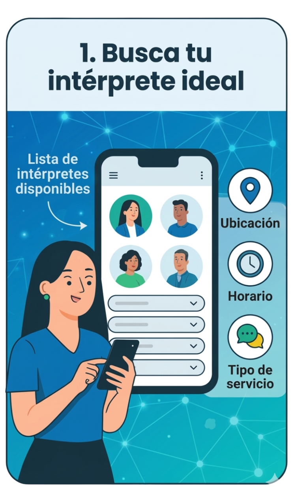
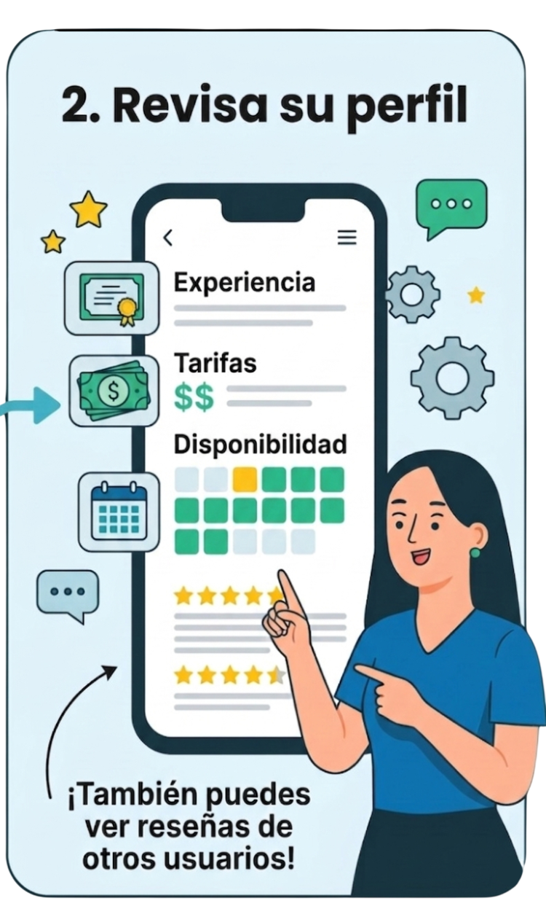
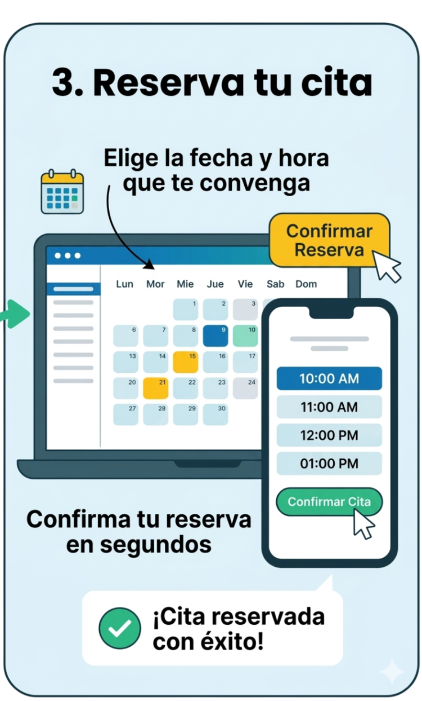
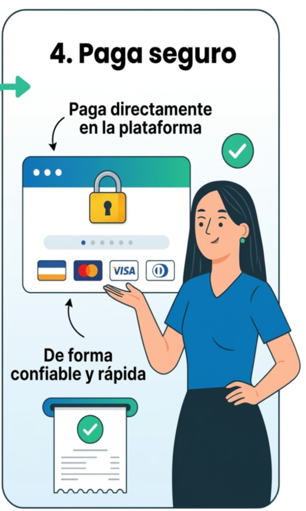
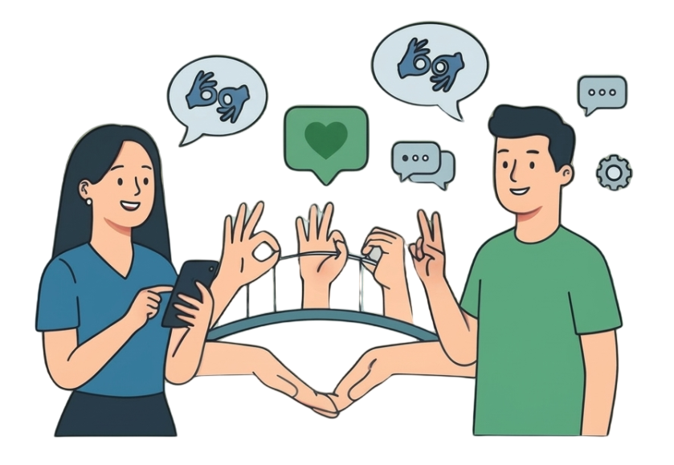
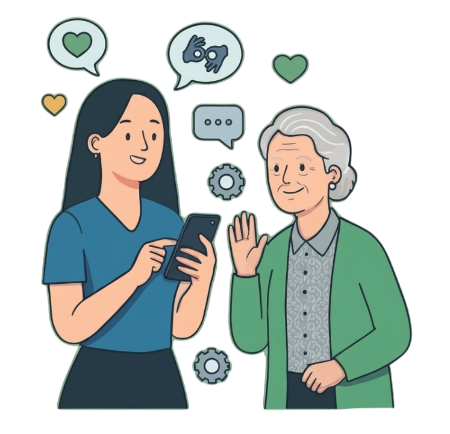
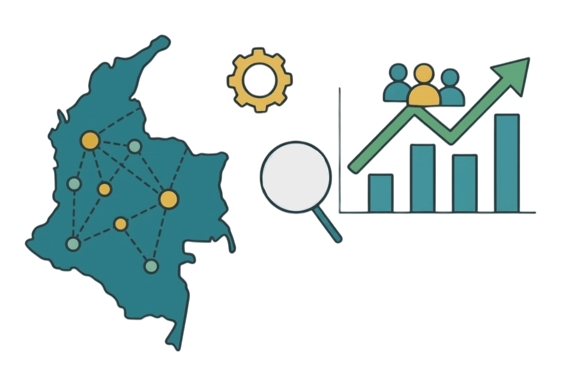
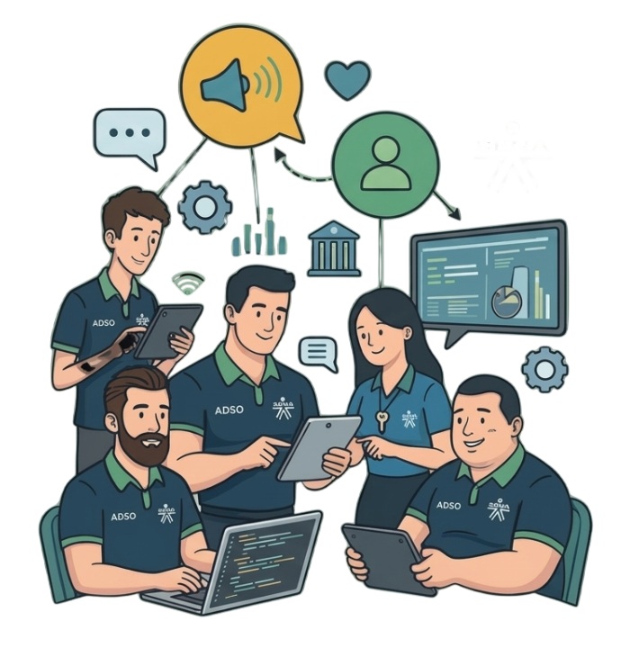
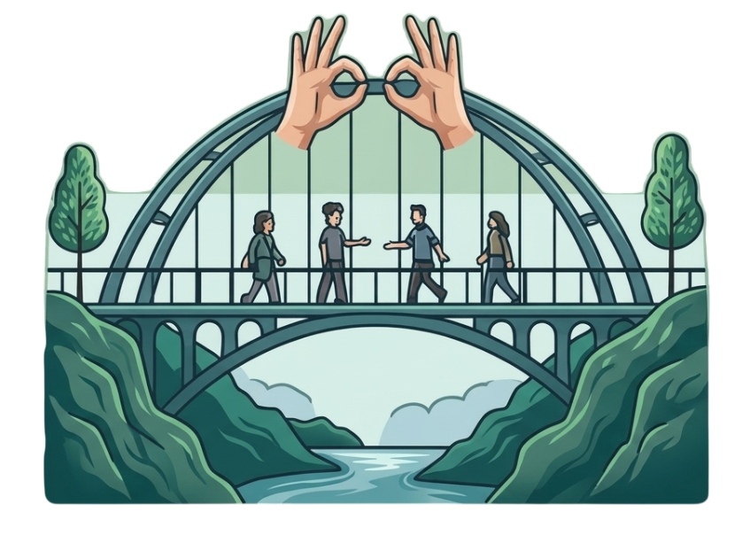

Encuentra intérpretes de lengua de señas de forma rápida y segura
🔹 Accede a intérpretes verificados y calificados
🔹 Agenda servicios según tu disponibilidad
🔹 Plataforma segura, accesible y fácil de usar

En Colombia, la comunidad sorda sigue creciendo y necesita más apoyo: conéctate como Usuario y accede a intérpretes en todo el país, o como Intérprete y aporta tu talento para transformar vidas.
Como funciona la plataforma?




Acerca de Interdi

Mision
Facilitar la comunicacion entre personas con discapacidad auditiva y oyentes, eliminando barreras y promoviendo una sociedad mas inclusiva a traves de la tecnologia.

Nuestros Valores
🤝Inclusion ☮️Respeto 🦻Accesibilidad 🎯Confianza 🌐Comunidad
Creemos en un mundo donde todos puedan comunicarse sin limitaciones, valoramos la diversidad, y buscamos soluciones simples, claras y al alcance de todos. Trabajamos para ofrecer un servicio seguro y transparente, construyendo impacto real en la sociedad.

Vision
Ser una plataforma lider en inclusion comunicativa, conectando comunidades y generando oportunidades reales para las personas sordas en Colombia

Nuestro Equipo
Somos un equipo de cinco personas Comprometidas con la inclusion en el desarrollo tecnologico y el cambio social por un mejor mundo para nuestra sociedad...

Nuestro Proposito
Interdi no es solo una plataforma, es un puente hacia una sociedad mas inclusiva. Trabajamos para que la comunicacion deje de ser barrera y se convierta en una oportunidad para todos.
Preguntas frecuentes
¿Qué es Interdi?
Interdi es una plataforma que conecta intérpretes de lengua de señas con personas que los necesitan, promoviendo la inclusión y la comunicación sin barreras.
¿Cómo funciona Interdi?
Simple: eliges el servicio que necesitas, seleccionas un intérprete disponible y realizas la solicitud. Nuestro equipo coordina la conexión para garantizar un servicio eficiente.
¿Quiénes pueden usar Interdi?
Cualquier persona que necesite un intérprete de lengua de señas, ya sea para comunicación personal, académica, laboral o eventos especiales.
¿Puedo reservar un intérprete para un evento?
Sí, Interdi permite reservar intérpretes para reuniones, conferencias, clases o eventos sociales, asegurando la disponibilidad según la fecha y hora.
¿Es seguro usar Interdi?
Sí. Todos nuestros intérpretes están verificados y capacitamos al equipo para garantizar la privacidad y seguridad en cada interacción.
¿Cómo puedo contactar a Interdi?
Puedes hacerlo a través del formulario de contacto en la web, nuestro correo electrónico, o por WhatsApp. Respondemos lo más rápido posible.